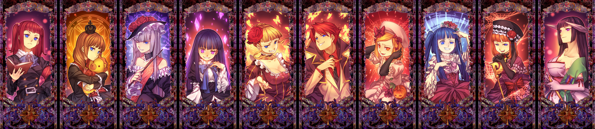

×
うしろみや
Menu
公式サイト
魔女の蕃茄園
茶話会
鎮守の社(ゲーム)
九羽鳥庵(音楽)
屋敷本館
右代宮の碑文
魔女の肖像画
かけらの世界
観劇の控え室

魔女の蕃茄園
右代宮大屋
黄金魔女の蕃茄園
ARTICLE ARCHIVE
标签:
日本
galgame
社会
日语
旅行
文学
游戏测评
ACG
中国
语言学
思考
文化
技术
NAS
游戏测评
《Eden*》— 鸟笼中的救赎之诗
《黑神话：悟空》— 是起点，也仅仅是起点
梦里不觉秋已深，余情岂是为他人 — WHITE ALBUM2
关于「ヨスガノソラ」中姓氏的思考
社会思考
11/23
镜中日本：从昭和自信到右倾迷失
10/15
参加国创赛志愿者的经历及所思
9/19
中国で溢れた「反日教育」が根深すぎる
8/12
由传统祭祀习俗引发的思考
为什么国家要大力推广中医？
日本の若者なんか日本人っぽくないよね？
新老二次元之争 — 从漫展经历聊起
中国青年の人生が一目で尽きるほどか？
美少女ゲーム業界の高齢化について
学术探讨
9/3
我的diy NAS搭建详细记录
訓読みを解くに基づくのメモリー
一些外语学习的思考 — N2 备考感悟
N1 动词生僻汉字整理（御浚い順）
「当て字」についての考え…
「うみねこのなく頃に」Monty Hall 问题思考
个人博客搭建日记 — GitHub Pages + 阿里云
文学艺术
浅论高中文言文与日本语的联系
从《沉沦》到《性的人》
人生杂笔
10/23
北海道を満喫するたび——道央、道东与大雪山旅行记录
嘉興南湖の畔に随筆
北海道观察日记 — 道北线旅行记录
四国横断记 — 神户 · 松山 · 西濑户